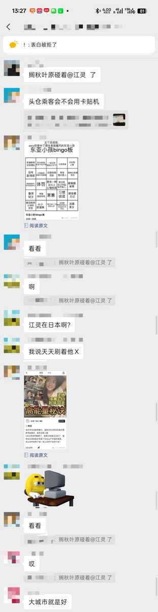
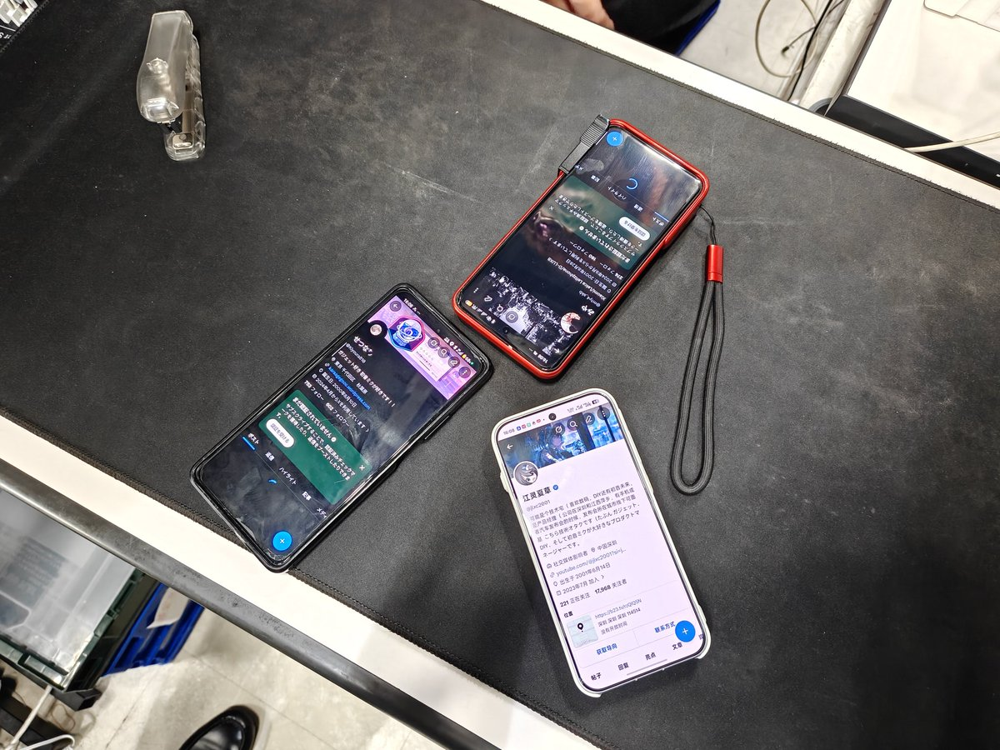

愿晚星照常升起🌈(keep4o)
@tadatsukiei
@jlxc2001 在现场🤭


江灵夏草
@jlxc2001
做自媒体最幸福的事情就是哪怕到了国外也能被粉丝认出来😭😭😭，前天在秋叶原逛的时候在一个叫做 CCコネクト的地下室一层的店看中古手机的时候，突然有人用中文问了我一句“你是江灵吗”
我第一反应“我超，盒！”
对方说很早之前，在我高中时期玩夏普的时候就关注我了，这是真十年老粉（震惊） https://t.co/R3C55vQt33